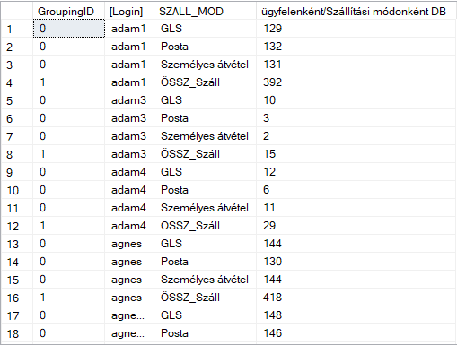
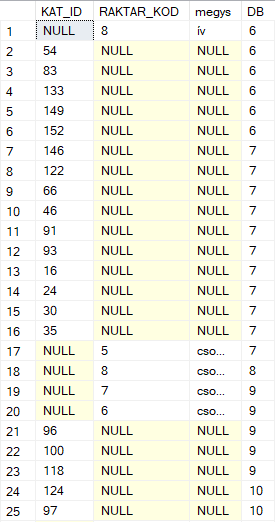
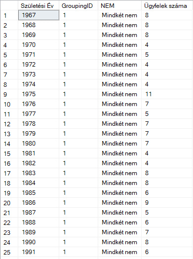
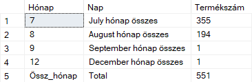
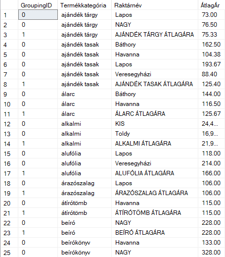

Grouping Sets, Rollup, and Cube
Advanced T-SQL reporting techniques for multi-level aggregation, subtotal generation, and summary-style analytical outputs.
Overview
This project uses a sample webshop database containing information about products, orders, customers, and pricing data. The dataset is designed to simulate a typical e-commerce environment and is used to demonstrate SQL querying techniques such as aggregations, joins, ranking, and analytical functions. This project focuses on advanced SQL Server aggregation techniques used to build structured summary reports. Instead of producing only one grouped result, the queries generate multi-level outputs containing detailed rows, subtotals, and grand totals in a single statement.
The main goal was to demonstrate how analytical SQL can support reporting-style logic directly in the database layer. These techniques are especially useful when summary rows must be calculated dynamically without writing separate queries for each level.
What This Script Demonstrates
ROLLUP Logic
Generating hierarchical subtotals and final totals from grouped business-style data.
CUBE Logic
Creating all possible grouped combinations for two-dimensional summary analysis.
GROUPING SETS
Defining custom aggregation levels directly, instead of relying only on standard GROUP BY output.
Readable Totals
Labeling subtotal and grand total rows with CASE, IIF, GROUPING, and GROUPING_ID.
Optional Result Visuals

Key SQL Techniques
GROUP BY → ROLLUP / CUBE / GROUPING SETS → GROUPING / GROUPING_ID → Subtotal Labeling → Readable Reporting Output
GROUPING()
Used to detect whether a value belongs to a normal row or to an aggregated total row.
GROUPING_ID()
Helps distinguish multiple subtotal levels and makes custom labeling easier.
CASE / IIF
Used to replace NULL-based aggregate rows with readable business labels such as subtotal or total.
HAVING Filters
Used to keep only the aggregation levels that matter for the final report.
Example Use Cases
The following examples were selected because together they show the full range of advanced grouping logic: hierarchical subtotals, custom grouping sets, cross-dimensional cube summaries, date-based aggregation, and formatted average-value reporting.
Example 1 — Order Count by Customer and Delivery Method with ROLLUP
This query shows how many orders were placed per customer and, within each customer, per shipping method. It also includes subtotal rows and a final total row in a single result set.
This is a strong reporting example because it transforms transactional order data into a readable multi-level summary.
SELECT GROUPING_ID([Login], SZALL_MOD) AS 'GroupingID',
CASE WHEN GROUPING([Login]) = 1 THEN 'ÖSSZ_Ügyfél'
ELSE [Login]
END AS '[Login]',
CASE WHEN GROUPING(SZALL_MOD) = 1 THEN 'ÖSSZ_Száll'
ELSE SZALL_MOD
END AS 'SZALL_MOD',
COUNT(*) AS 'ügyfelenként/Szállítási módonként DB'
FROM Rendeles
GROUP BY ROLLUP([Login], SZALL_MOD);

Example 1 Query Results
Example 2 — Product Count by Category, Warehouse, and Warehouse + Unit with GROUPING SETS
This example demonstrates custom aggregation levels. Instead of generating every subtotal combination automatically, the query explicitly defines the levels that matter.
This is useful when a report needs selected grouping layers only, without extra subtotal combinations.
SELECT KAT_ID,
RAKTAR_KOD,
MEGYS,
COUNT(*) AS 'DB'
FROM Termek
GROUP BY GROUPING SETS (
(KAT_ID),
(RAKTAR_KOD),
(RAKTAR_KOD, MEGYS)
)
HAVING COUNT(*) >= 6;

Example 2 Query Results
Example 3 — Customer Count by Birth Year and Gender with CUBE
This query counts customers by birth year and gender while also producing subtotal and grand total combinations. It is a good example of two-dimensional analytical summarization.
This type of query is highly relevant in reporting because it combines demographic grouping with subtotal logic in one output.
SELECT IIF(GROUPING(SZULEV)=1,'TOTAL', CAST(SZULEV AS nvarchar(5))) AS 'Születési Év',
GROUPING_ID(SZULEV, NEM) AS 'GroupingID',
CASE GROUPING_ID(SZULEV, NEM)
WHEN 0 THEN NEM
WHEN 1 THEN 'Mindkét nem'
WHEN 2 THEN
CASE
WHEN NEM = 'F' THEN 'Összes férfi'
WHEN NEM = 'N' THEN 'Összes nő'
END
WHEN 3 THEN 'Total'
END AS 'NEM',
COUNT(*) AS 'Ügyfelek száma'
FROM Ugyfel
GROUP BY GROUPING SETS (ROLLUP(SZULEV), CUBE(NEM))
ORDER BY 4;

Example 3 Query Results
Example 4 — Product Count by Month and Day with Partial Totals Only
This query groups products by the month and day of entry date, but keeps only subtotal and total rows. Detailed day-level rows are filtered out.
This is a nice example of controlling which aggregation levels remain visible in the final result.
SELECT IIF(GROUPING(MONTH(FELVITEL)) = 1, 'Össz_hónap',
CAST(MONTH(FELVITEL) AS nvarchar(10))) AS 'Hónap',
CASE GROUPING_ID(MONTH(FELVITEL), DAY(FELVITEL))
WHEN 0 THEN CAST(DAY(FELVITEL) AS nvarchar(10))
WHEN 1 THEN DATENAME(MONTH, DATEFROMPARTS(2000, MONTH(FELVITEL), 1)) + ' hónap összes'
WHEN 3 THEN 'Total'
END AS 'Nap',
COUNT(*) AS 'Termékszám'
FROM Termek
GROUP BY ROLLUP(MONTH(FELVITEL), DAY(FELVITEL))
HAVING GROUPING_ID(MONTH(FELVITEL), DAY(FELVITEL)) NOT IN (0);

Example 4 Query Results
Example 5 — Average Product Prices by Category and Warehouse
This query calculates average product prices by category and by category + warehouse, while also including a grand total. It combines joins, formatting, and grouping logic in one business-style report.
This example is especially portfolio-friendly because it looks like a real management summary report.
SELECT GROUPING_ID(Termekkategoria.KAT_NEV, Raktar.RAKTAR_NEV) AS 'GroupingID',
IIF(GROUPING(Termekkategoria.KAT_NEV)=1,'Végösszeg',
CAST(Termekkategoria.KAT_NEV AS nvarchar(20))) AS 'Termékkategória',
CASE GROUPING_ID(Termekkategoria.KAT_NEV, Raktar.RAKTAR_NEV)
WHEN 0 THEN Raktar.RAKTAR_NEV
WHEN 1 THEN UPPER(Termekkategoria.KAT_NEV) + ' ÁTLAGÁRA'
WHEN 3 THEN 'Végösszeg'
END AS 'Raktárnév',
FORMAT(AVG(Termek.LISTAAR), 'N2') AS 'ÁtlagÁr'
FROM Termekkategoria
JOIN Termek ON Termekkategoria.KAT_ID = Termek.KAT_ID
LEFT JOIN Raktar ON Raktar.RAKTAR_KOD = Termek.RAKTAR_KOD
GROUP BY ROLLUP(Termekkategoria.KAT_NEV, Raktar.RAKTAR_NEV);

Example 5 Query Results
Why These Examples Are Strong
Business Readability
The queries do not stop at raw aggregation. They produce labeled, readable report-style outputs.
Advanced SQL Server Features
They show practical use of GROUPING, GROUPING_ID, ROLLUP, CUBE, and GROUPING SETS together.
Real Reporting Logic
These are closer to real BI or reporting queries than simple textbook GROUP BY examples.
Clear Progression
Together they show increasing complexity: from hierarchical totals to custom grouping and formatted reporting.
Key Takeaways
- This project demonstrates advanced aggregation in SQL Server. It goes beyond simple GROUP BY and shows how to build structured summary reports.
- ROLLUP, CUBE, and GROUPING SETS each solve different reporting needs. Together they form a powerful toolkit for analytical SQL.
- Readable subtotal labeling is an important skill. GROUPING and GROUPING_ID help convert technical aggregate rows into business-friendly outputs.
- The selected examples are highly portfolio-relevant. They resemble the type of reporting logic often needed in BI, sales analysis, and operational dashboards.
Navigation
This page is part of the T-SQL portfolio section and focuses specifically on advanced grouping logic in SQL Server.